Introduction
This documentation is last updated on 2 May 2019.
Thanks for purchasing HealthPress WordPress Theme. If you have any question that is beyond the scope of this documentation, Feel free to ask that on our support website. You can visit this knowledge base article to learn about how to get item purchase code from themeforest.net to sign-up on our support site.
Important Note
It is highly recommended to use child theme, So that you can easily update parent theme whenever a new update becomes available. A pre-built ready to use child theme is included in the main theme pack that you might have downloaded from themeforest.
How to Update Theme
If you want to update your theme then you can consult this knowledge base article for automatic update OR you can consult this knowledge base article for manual update.
Support Policy
Support Includes- Answering technical questions about theme features.
- Assistance with reported bugs and issues.
- Help with included 3rd party assets.
- Theme customization services.
- Theme installation services.
Install Theme
To start you must have a working version of WordPress. Almost all major web hosts provides one click WordPress install and you can consult your host's help site for more information in this regard. For manual install you can consult WordPress Codex Installing WordPress.
Once you have a working version of WordPress, You need to download "All Files and Documentation" from themeforest download page and extract the downloaded zip to get various files including healthpress.zip.
{kind=link}
Install Theme Via WordPress Dashboard ( Recommended Way )
- Go to "Appearance > Themes" section
- Click "Add New"
- Click "Upload Theme"
- Choose the healthpress.zip file and press 'Install Now'
- Once the theme is uploaded you need to activate it.
- A notice will be displayed right after the activation of the theme asking you to install and activate the required plugins. So, go ahead and click on Begin installing plugins.
- On next page you will see the list of plugins to install. Select all the plugins and click on Install and then click on Apply to install all of them at once (as shown in the screenshot below).
- After all the plugins are installed click on Return to Required Plugins Installer.
- Once again select all the plugins and click on Activate and then click on Apply to activate all the plugins and you are done.
- After activation go to "HealthPress → Customize" to play with theme's settings. You can also import the demo data before changing any settings in the Customizer.
if you face any problem during upload through dashboard, please upload the theme using FTP as guided below.
Install Theme Via FTP ( Alternative Way )
- Access your hosting server using an ftp client like FileZilla
- Go to the 'wp-content/themes' folder of your WordPress installation
- Extract the healthpress.zip file and put the healthpress folder in 'wp-content/themes/' folder
- Go to 'WordPress Dashboard > Appearance > Themes' section to activate the theme
Install Child Theme ( Highly Recommended )
It is highly recommended to use child theme, So that you can easily update parent theme whenever a new update becomes available. A pre-built ready to use child theme is included in the main theme pack that you have downloaded from themeforest.
To install child theme, You need to upload the healthpress-child.zip and activate it in the same way as you have uploaded and activated parent theme's healthpress.zip.
Next Step is to Import Demo Contents
Import Demo Contents
You can follow one of these approaches.
- One Click Demo Import ( Automatic & Recommended )
- Import XML Contents and Configure Settings Manually
1. One Click Demo Import ( Automatic & Recommended )
Step 1
Go to Settings > Permalinks and choose Post name from Common Settings and save the changes, As displayed in screen shot below.
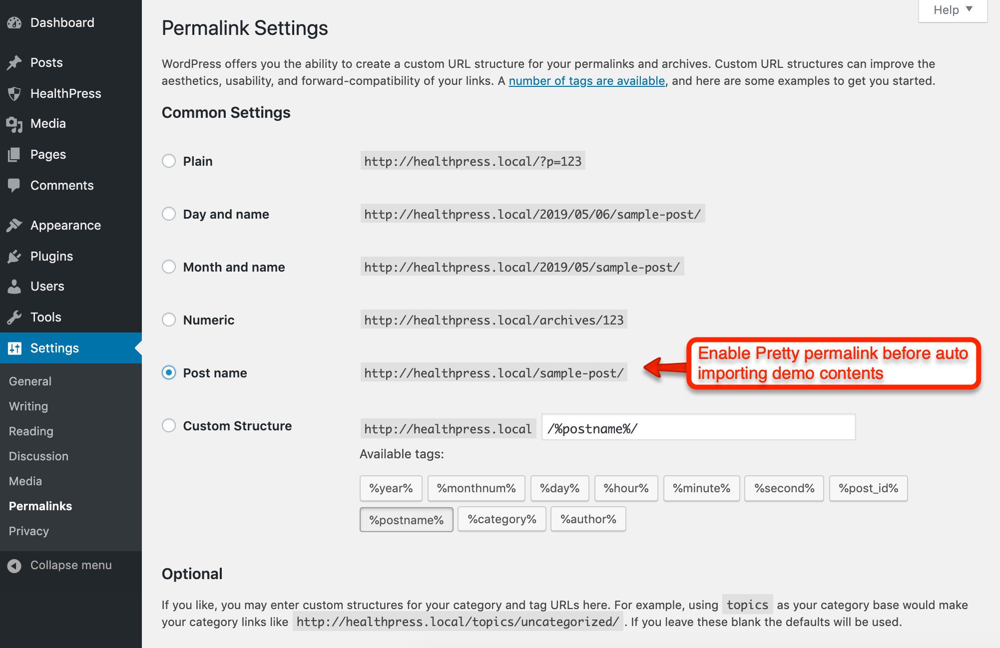Step 2
Note: It is important to complete Step 1 as import script is programmed to work with pretty permalinks. Otherwise you will have configuration issues after importing demo data contents.
Go to HealthPress > Demo Import and click on it. Wait for few minutes as the demo images are being fetched from remote server and this process can take few minutes.
Step 3
Once the import process is complete, You will receive a message like the one displayed in the screen shot below.
Visit your site and you will find your site working like the theme demo.
In case of any problem, Get in touch with our support team using our support site.
2. Import XML Contents and Configure Settings Manually
Step 1
Go to WordPress Admin > Tools > Import and click WordPress as displayed in image below.

At 1st time you need to install WordPress importer plugin
Once installed you need to activate the plugin and run the importer.
Step 2
Look for Import XML folder in unzipped package downloaded from themeforest and use the XML file within it.
After importing XML file.
- Assign posts to an existing author.
- Mark the checkbox to download and import file attachments
- Click 'Submit' button
Import process can take few minutes. So wait for it and try to keep the focus on current tab in your browser.
After that is done, you will have bunch of posts, pages, properties and other contents as on the theme demo.
Step 3
Navigate to Appearance > Menus and use the Already Imported Menu from XML and assign it to theme location "Main Menu" from Menu Settings section below menu. After that save the menu. As pointed in screenshot below.
Step 4
To configure reading settings you need to visit WordPress Admin > Settings > Reading and choose that front page displays as static page. Then select Home as Front Page and News as Posts Page. As, displayed in screen shot below.
Step 5
To configure permalinks settings visit WordPress Admin > Settings > Permalinks and configure then save it as displayed in image below.
Configure Menus
In case of Demo Contents Import the menu is already configured and you do not need to follow this section.
Navigate to Appearance > Menus and use the Already Imported Menu from XML and assign it to theme location "Main Menu" from Menu Settings section below menu. After that save the menu. As pointed in screenshot below.
Next Step is to Configure Reading Settings
Create Home Page
In case of Demo Contents Import the home page is already created and you do not need to follow this section.
To set up the Home page you need to create a new page, Go to Pages > Add New. You can give this page a title "Home" yet you do not need to include any contents for now. Select the “Home” template from the Page Attributes section, as displayed in screen shot below and click “Publish”.
Create Page
In case of Demo Contents Import the news page is already created and you do not need to follow this section.
To set up the News page you need to create a new page, Go to Pages > Add New. You can give this page a title "News" yet you do not need to include any contents for now. Select the “Default Template” template from the Page Attributes section, as displayed in screen shot below and click “Publish”.

Create Miscellaneous Pages
Select a template from the Page Attributes section, as displayed in screen shot below and click “Publish”.
Configure Reading Settings
In case you followed Demo Contents Import, The reading settings should already be configured and you do not need to follow this section.
I am assuming that you have imported the XML successfully and you have home page and news page available for use. If this is not the case then simply create a new page using Home and name it as Home after that create another page using default template and name it as Blog.
To configure reading settings you need to visit WordPress Admin > Settings > Reading and choose that front page displays as static page. Then select Home as Front Page and Blog as Posts Page. As, displayed in screen shot below.
Configure Permalinks Settings
To configure permalinks settings visit WordPress Admin > Settings > Permalinks and configure it as displayed in image below.
Configure Header
Navigate to Appearance > Customize > Site Identity, you can configure following things from there.
- Upload your website logo image
- Update your website title
- Update your website tagline
- Upload your website site icon
Navigate to Appearance > Customize > Header, you can configure following things from there.
Configure Slider
You can display one of the following two sliders.
- Default Slider
- Revolution Slider
1. Default Slider
Slider appear as part of home page template. You can add slides based on guide images provided below.
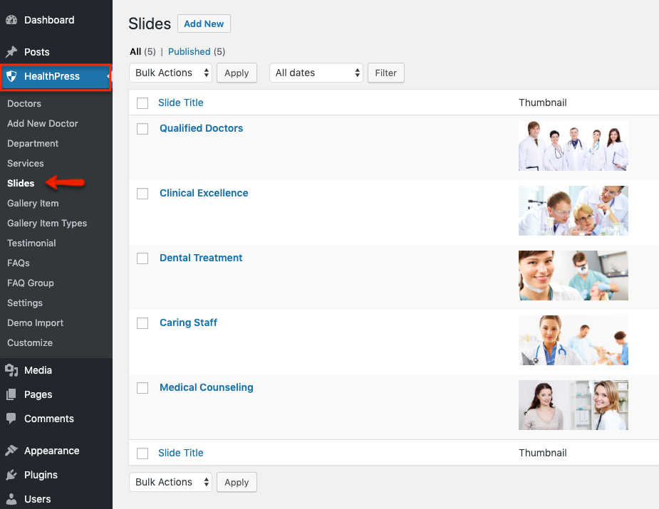How to add New Slide
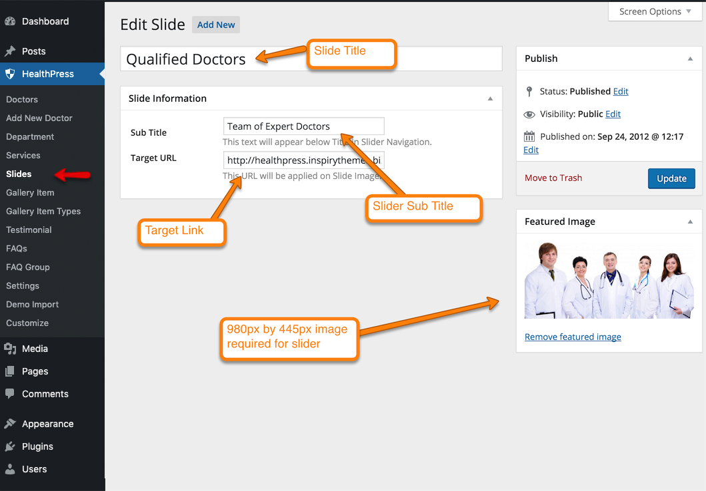Color Options for Flex Slider
Navigate to Appearance > Customize > Home - Slider & Slogan Area > Slider Colors, you can configure following things from there.
2. Revolution Slider
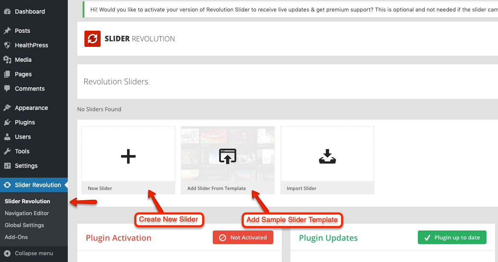 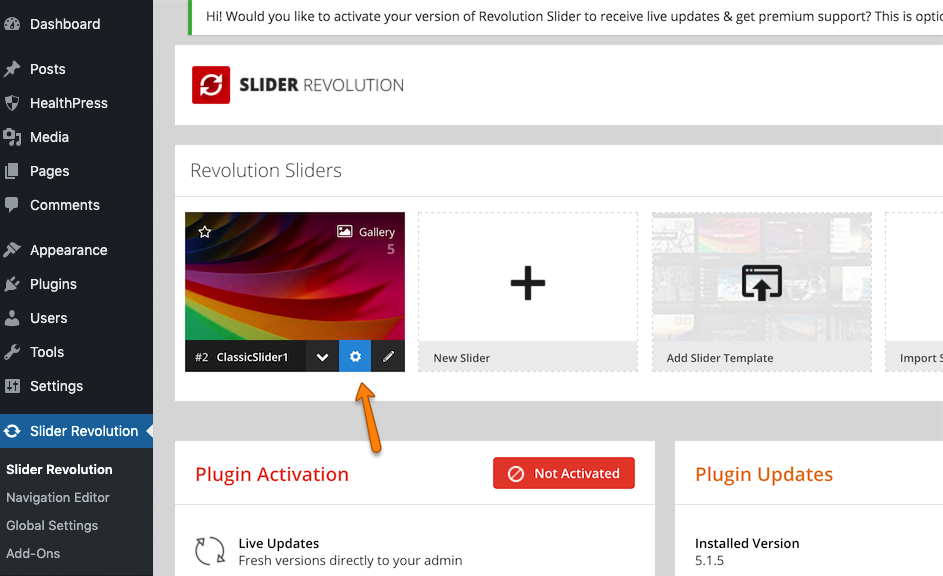 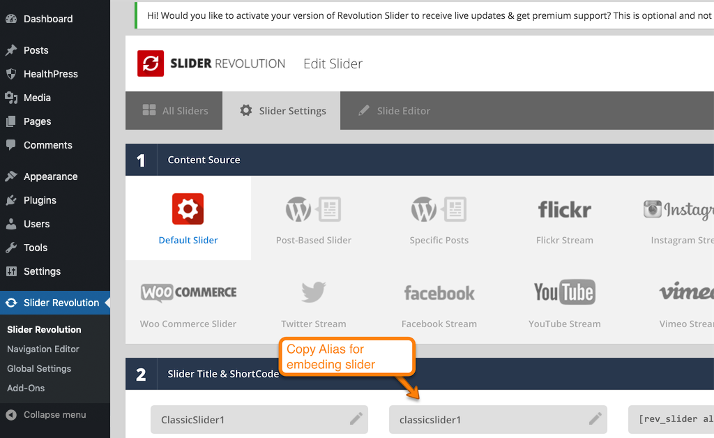Navigate to Appearance > Customize > Home - Slider & Slogan Area > Slider Area, you can configure following things from there.
Configure Home Slogan
Navigate to Appearance > Customize > Home - Slider & Slogan Area > Home Slogan, you can configure following things from there.
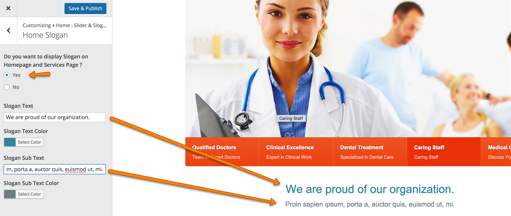Configure Home Services List
Navigate to Appearance > Customize > Home - Services List, you can configure following things from there.
Display Options
- Service list display options
- Image type options
Upload a flexible width/height image for simple OR (112px by 224px) for hover effect.
Configure Home Doctors Section
Navigate to Appearance > Customize > Home - Doctors, you can configure following things from there.
Homepage Testimonials
Navigate to Appearance > Customize > Home - Testimonials, you can configure following things from there.
Configure Footer
you can configure the following things in footer
- Twitter Setup
- Footer Contents
1. Twitter Setup
-
you need the twitter App's consumer key, consumer secret, access token and access token secret for twitter authentication.
To get all these keys, You need to register a new twitter app from following url
After registering app and generating access token you will have api keys and access token as displayed below

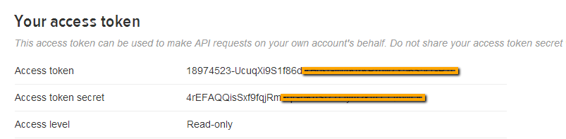 -
Navigate to Appearance > Customize > Footer > Twitter Setup, and enter information.
2. Footer Contents
Navigate to Appearance > Customize > Footer > Footer Contents, you can configure following things from there.
Add News Post
Go to WordPress Admin > Posts > Add New- Provide the post title
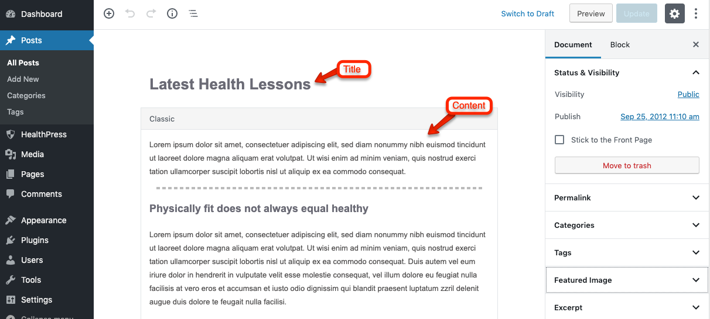
-
Provide the post contents
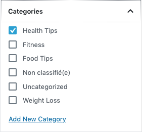
-
Add or select the related category
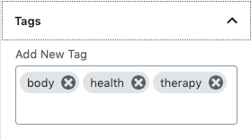
-
Add or select the related tags
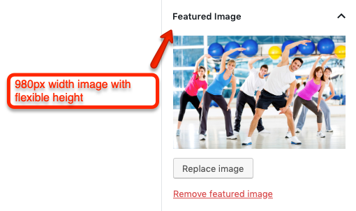
-
Provide the featured image
- Publish the post once it is ready.
Add Services
Go to WordPress Admin > Services > Add New- Provide service title
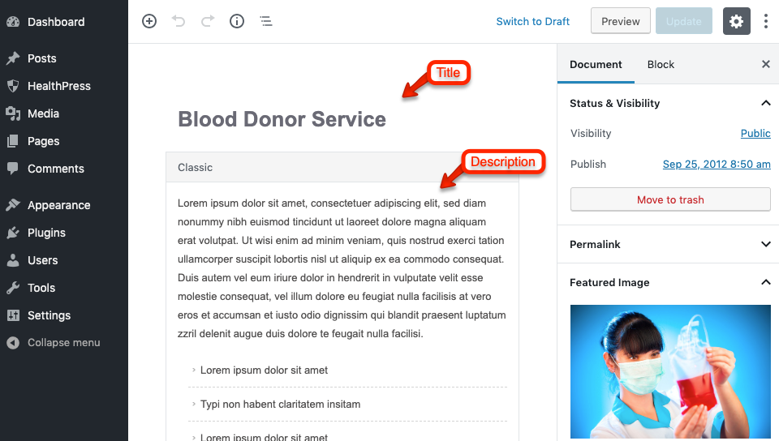
- Provide service description
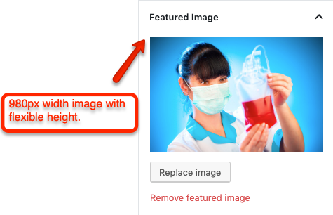
- Add feature image.

Add Doctors
-
Go to WordPress Admin > Doctors > Departments
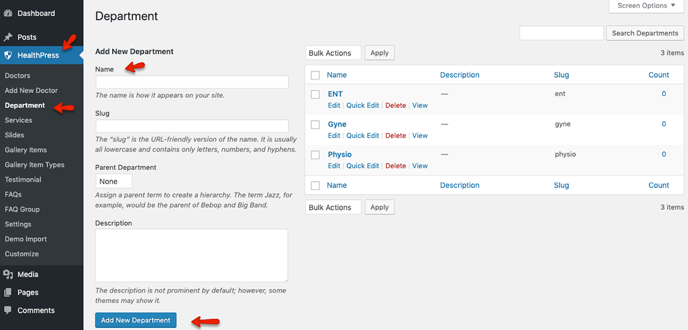 -
Go to WordPress Admin > Doctors > Add New
Provide Doctor Title

- Provide Doctor Description

- Provide Doctor Information
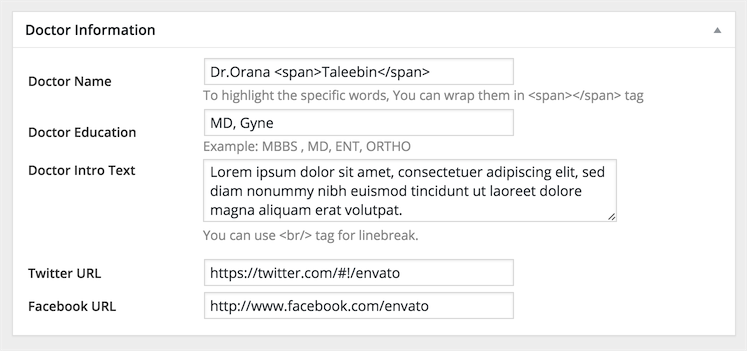
- Select or Add a Department
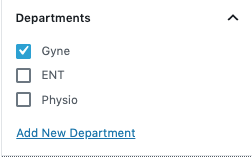
- Add Feature Image.

Add Testimonials
Go to WordPress Admin > Testimonials > Add New
-
Provide Testimonial Title
- Provide Testimonial Description

-
Upload Featured Image
Add Gallery Item
-
Go to WordPress Admin > Gallery Items > Gallery Item Types
Add Gallery Item Types
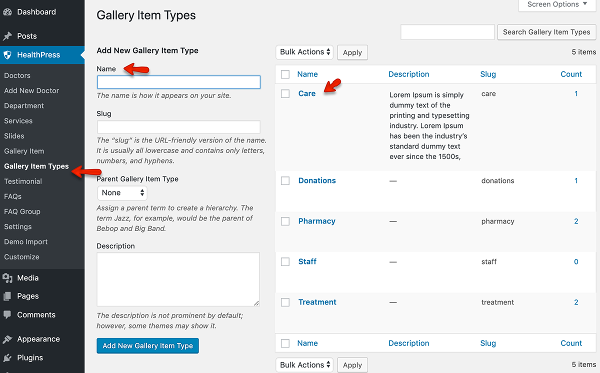
-
Go to WordPress Admin > Gallery Items > Add New
Provide Gallery Item Title
-
Provide Gallery Item Description
-
Select or Add New Gallery Item Type
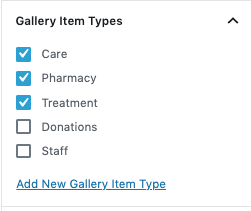
-
Upload Featured Image
-
Add Slider Images to Gallery
Click Add Media Button
Select Images and Insert Into Post

How to add New FAQ
Add Contact Us Page
Note: If you have imported the demo contents XML then this page is already created.
Go to WordPress Admin > Pages > Add New- Provide the page title
- Select the Contact Template as template from page attributes.

- Provide Description
-
Provide Page Title and Sub Title
- Publish the page once it is ready.
-
After publishing you need to add the newly created page in menu from WordPress Admin > Appearance > Menus
- Next step is to configure Contact Customizer options from Appearance > Customize > Contact.
Contact Page Settings
Go to WordPress Admin > Appearance > Customize > ContactAppointment Widget
Go to WordPress Admin > Appearance > Customize > WidgetsTestimonials Widget
Go to WordPress Admin > Appearance > Customize > WidgetsNewsletter Widget
Go to WordPress Admin > Appearance > Customize > WidgetsFooter Info Widget
Go to WordPress Admin > Appearance > Customize > WidgetsLocation Widget
Go to WordPress Admin > Appearance > Customize > WidgetsRecent Posts Widget
Go to WordPress Admin > Appearance > Customize > WidgetsQuick Contact Widget
Go to WordPress Admin > Appearance > Customize > WidgetsShort Codes
Columns
Columns short code is easy way to make columns in your page or post. All short codes related to columns and usage of these codes is mentioned below:
[columns] [one_half][/one_half] [one_third][/one_third] [two_third][/two_third] [one_fourth][/one_fourth] [three_fourth][/three_fourth] [/columns]
jQuery Accordion
jQuery Accordion shortcode makes an accordion. Its usage example is given below:
[accordion] [accor_block active=true title="First Accordion Item"]Some Contents[/accor_block] [accor_block title="Second Accordion Item"]Some Contents[/accor_block] [accor_block title="Third Accordion Item"]Some Contents[/accor_block] [/accordion]
Message Boxes
We have four different types of message boxes in this theme. usage is mentioned below:
[error]Your Note Message Her[/error] [success]Your Note Message Her[/success] [info]Your Note Message Her[/info] [notice]Your Note Message Her[/notice]
Button
Button shortcode is provided to allow user to add his own buttons in contents. usage is mentioned below:
[button link="http://www.yourlink.com" target="_blank"]Button Title[/button]
Theme Translation
This theme is translation ready.
For translation to your language you should consult This Knowledge Base Article.
In case of any problem you can visit our support site and create a support ticket for your problem.
How to Modify Styles
There are various options available to modify styles in this theme.-
Go to WordPress Admin > Appearance > Customize > Colors
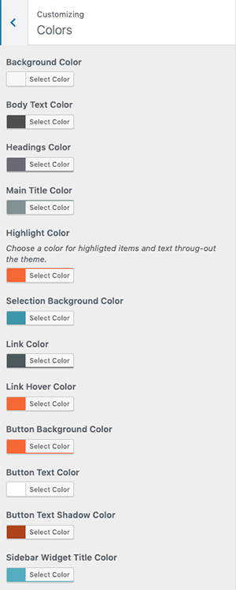 -
Custom CSS in Child Theme - 'child-custom.css' file is provided in child theme to add big css changes.
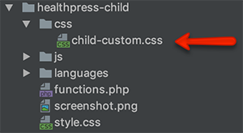 -
Custom CSS in Parent Theme - 'custom.css' file is provided in parent theme to add big css changes.
Use Child Theme for Customization ( Highly Recommended )
It is highly recommended to use child theme for any customization that you want to make, So that you can easily update parent theme whenever a new update becomes available. A pre-built ready to use child theme is included in the main theme pack that you have downloaded from themeforest.
Hire Customization Services
For any customization you can consider using following services.